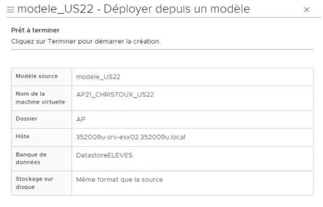
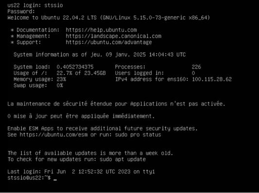
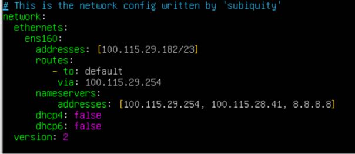

Partie 1 : Création et configuration de la VM Ubuntu Server
Étape 1 : Création de la machine virtuelle

Création de la machine virtuelle
J'ai commencé par créer une nouvelle machine virtuelle dans VirtualBox à partir du modèle
model_US22 (modèle Ubuntu Server 22.04 fourni par le lycée).
Configuration de la VM
| Paramètre |
Valeur |
Justification |
| Nom de la VM |
AP21_CHRISTOUX_US22 |
Nomenclature imposée (AP21 + Nom + US22) |
| Emplacement |
SIO1_2425/AP21/ |
Dossier organisé par année et TP |
| RAM |
2048 MB (2 Go) |
Minimum recommandé pour Odoo + PostgreSQL |
| Processeurs |
2 cœurs |
Performance suffisante pour les tests |
| Réseau |
Accès par pont |
Permet l'accès depuis mon PC hôte |
Étape 2 : Installation Ubuntu Server 22.04
J'ai démarré la VM sur le modèle Ubuntu Server fournie par nos professeurs.

Interface Linux de la VM US22
Étape 3 : Configuration IP statique avec Netplan
Important :
Ubuntu Server 22 utilise Netplan pour la configuration réseau (et non plus /etc/network/interfaces).
La configuration se fait dans des fichiers YAML.
Une fois Ubuntu installé, j'ai configuré l'adresse IP statique attribuée : 100.115.29.182/23
Édition du fichier Netplan
sudo nano /etc/netplan/00-installer-config.yaml
network:
ethernets:
ens160:
addresses: [100.115.29.182/23]
routes:
- to: default
via: 100.115.29.254
nameservers:
addresses: [100.115.29.254, 100.115.28.41, 8.8.8.8]
dhcp4: false
dhcp6: false
version: 2
Explication de la configuration :
ens160 : nom de l'interface réseau (peut varier)dhcp4(6): false : désactive DHCP (on veut du statique)addresses: [100.115.29.182/23] : adresse IP + masque (/23 = 255.255.254.0)via: 100.115.29.254 : passerelle par défautaddresses: [...] : serveurs DNS du lycée et de Google

Configuration de l'adresse IP sur la VM US22
Application de la configuration
sudo netplan apply
ping 8.8.8.8
Résultat :
L'adresse IP 100.115.29.182 est bien configurée et la VM peut accéder à Internet !
Étape 4 : Mise à jour du système
Avant d'installer Odoo, j'ai mis à jour tous les paquets du système :
sudo apt update
sudo apt upgrade
Étape 5 : Installation d'Odoo 16
J'ai suivi la procédure officielle d'installation d'Odoo 16 sur Ubuntu Server.
Installation des dépendances
sudo apt install postgresql postgresql-client -y
sudo apt install python3 python3-pip python3-dev python3-venv -y
sudo apt install libxml2-dev libxslt1-dev libldap2-dev libsasl2-dev \
libtiff5-dev libjpeg8-dev libopenjp2-7-dev zlib1g-dev \
libfreetype6-dev liblcms2-dev libwebp-dev -y
sudo apt install wkhtmltopdf -y
Création de l'utilisateur Odoo
sudo adduser --system --home=/opt/odoo --group odoo
Configuration de PostgreSQL
sudo su - postgres -c "createuser -s odoo"
Téléchargement d'Odoo 16
cd /opt
sudo git clone https://www.github.com/odoo/odoo --depth 1 --branch 16.0 /opt/odoo16
sudo chown -R odoo:odoo /opt/odoo16
Installation des dépendances Python
sudo pip3 install -r /opt/odoo16/requirements.txt
Création du fichier de configuration
sudo nano /etc/odoo16.conf
[options]
admin_passwd = stssio
db_host = localhost
db_port = 5432
db_user = odoo
db_password = False
addons_path = /opt/odoo16/addons
logfile = /var/log/odoo16/odoo.log
Démarrage d'Odoo
sudo mkdir /var/log/odoo16
sudo chown odoo:odoo /var/log/odoo16
sudo su - odoo -s /bin/bash -c "/opt/odoo16/odoo-bin -c /etc/odoo16.conf"
Odoo démarré !
Odoo est maintenant accessible sur http://100.115.29.182:8069
Étape 6 : Accès à Odoo depuis le navigateur
J'ai ouvert mon navigateur et accédé à l'adresse : http://100.115.29.182:8069
Configuration initiale
| Paramètre |
Valeur |
| Nom de la base |
ap21_christoux |
| Email |
admin@stssio.fr |
| Mot de passe |
stssio |
| Numéro de téléphone |
06 32 91 93 17 |
| Langue |
Français |
| Pays |
France |
| Données de démo |
Non (désactivées) |
Étape 7 : Installation de l'application Vente
Une fois connecté, j'ai installé l'application Vente (Sales) :
- Clic sur Apps dans le menu principal
- Recherche de "Vente" ou "Sales"
- Clic sur Installer
- Attente de l'installation (quelques secondes)
Module Vente installé !
L'application Vente permet de gérer les clients, devis, commandes et factures.
Étape 8 : Test de création manuelle d'un client
J'ai testé la création d'un client particulier pour repérer les champs disponibles :
- Menu Vente → Clients
- Clic sur Créer
- Observation des champs proposés par défaut
Champs repérés dans Odoo
| Champ Odoo |
Type |
Obligatoire ? |
| Nom |
Texte (nom complet) |
✅ Oui |
| Est une entreprise |
Case à cocher |
Non |
| Rue |
Texte |
Non |
| Code postal |
Texte |
Non |
| Ville |
Texte |
Non |
| Email |
Email |
Non |
| Téléphone |
Texte |
Non |
| Mobile |
Texte |
Non |
Problème détecté :
Par défaut, Odoo n'a qu'un seul champ "Nom" qui contient le nom complet.
Il n'y a pas de séparation Nom / Prénom !
→ Ce problème sera résolu dans la Partie 2 avec l'installation d'un addon.
Étape 9 : Test d'import du fichier CSV exemple
J'ai testé l'import du fichier CSV exemple fourni (clients_particuliers_exemple.csv) :
Titre;Nom;Prénom;Email;Téléphone;Mobile;Code postal;Ville;Rue;Est une entreprise
Madame;Perrin;Guillemette;guillemette.perrin@email.fr;0101234567;0701234567;45100;Orléans;10 Rue de la Marine;FAUX
Procédure d'import
- Menu Vente → Clients
- Clic sur Favoris → Importer
- Sélection du fichier CSV
- Mapping des colonnes CSV vers les champs Odoo
- Test de l'import
Problème constaté :
Les colonnes Nom et Prénom du CSV ne peuvent pas être mappées correctement
car Odoo n'a qu'un seul champ "Nom" (nom complet).
Conséquence : Impossible d'importer les données avec Nom et Prénom séparés sans addon !
Partie 1 terminée !
La VM Ubuntu Server est configurée, Odoo 16 est installé et fonctionnel, et j'ai identifié le problème
de séparation Nom/Prénom qui sera résolu en Partie 2.